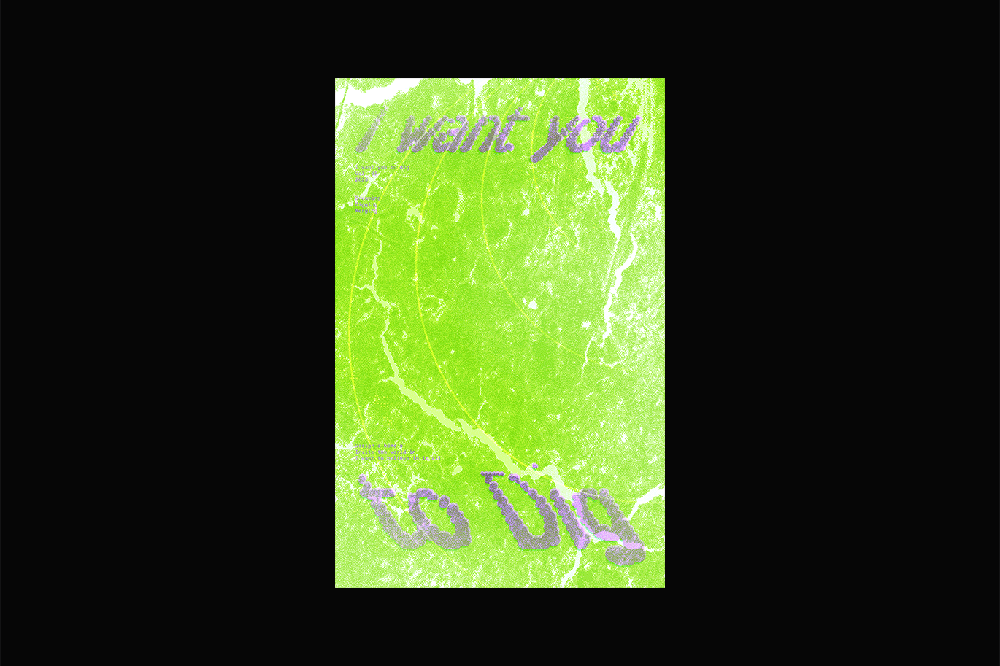
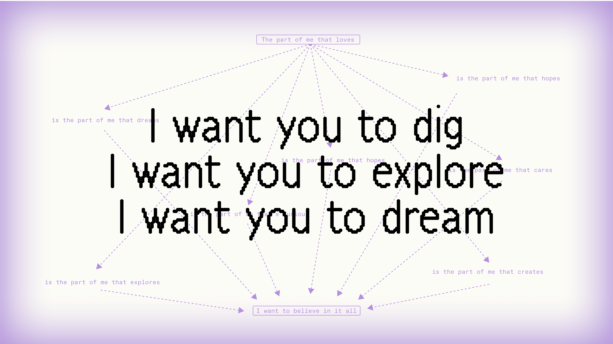
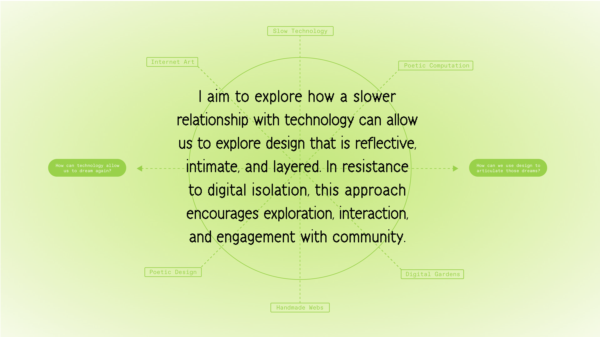
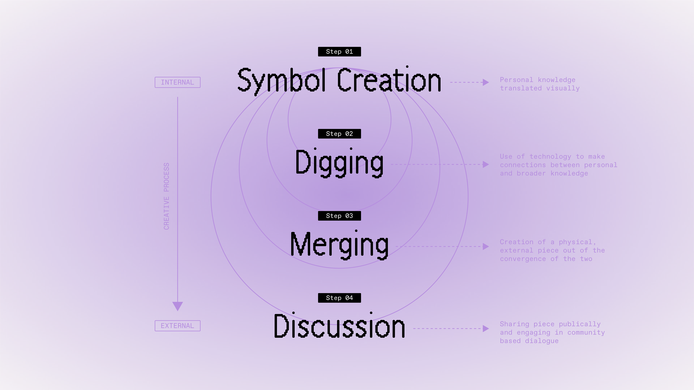
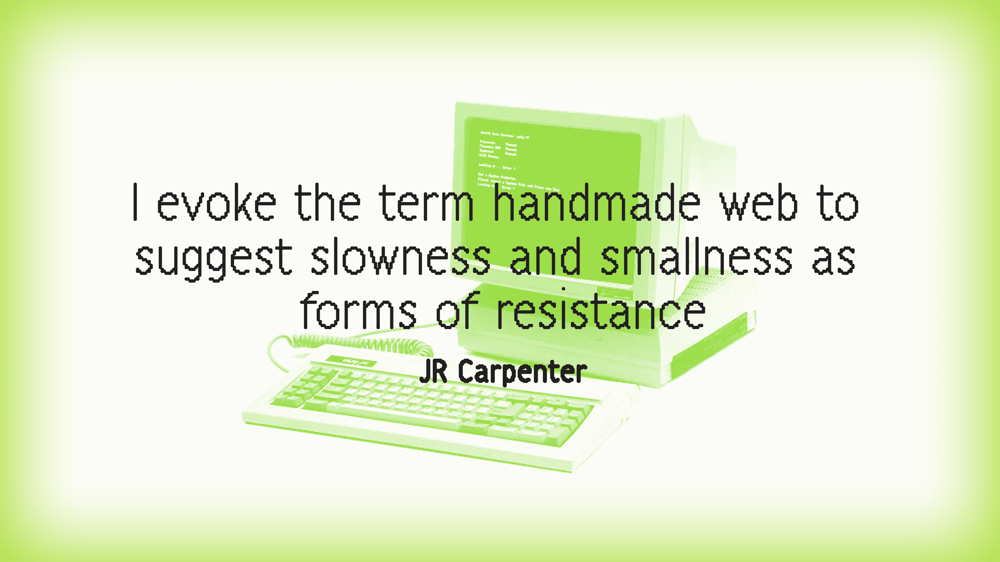

(designer)
I WANT YOU TO DIG
(publication, workshop, website)

- → 2025
- → Illustrator, Photoshop, Figma
- Publication, Workshop Hosting, Website UI
I WANT YOU TO DIG aims to situate our modern relationship to technology within our greater social context, exploring the ways design has expanded, narrowed, and defined that relationship. Threading the theme of metaphor and poetics throughout, viewers are encouraged to consider how slower, collaborative, and handmade approaches to both design and computation can help us imagine more loving, community-oriented practices. This project takes the form of a publication, a workshop, and a website, connecting physical and digital design with community-oriented practices.
Publication
This publication posits the central questions of my inquiry: how can we move towards a more dreamful relationship with technology, and how can design allow us to articulate these dreams? These questions are answered through essays, interviews, survey’s, and a poster-making workshop, all documented here.


Workshop
Within this project, I propose community-oriented educational spaces that reimagine our relationship with design and technology are key to creating more intimate, human-centered work. At this workshop, participants created personal symbols based on memories, and combined those symbols with fragments (type, image) found through randomly assigned Wikipedia pages. All these resources were combined to create posters.






Website
This website details the central written portions of the publication, as well as documenting the workshop. I aimed to explore and gap the divide between physical and digital publishing through references to slow technology and handmade web design. Through the instructions and resources documented on this site, viewers are encouraged to replicate the above workshop, or even come up with their own.